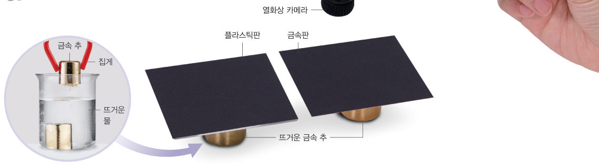
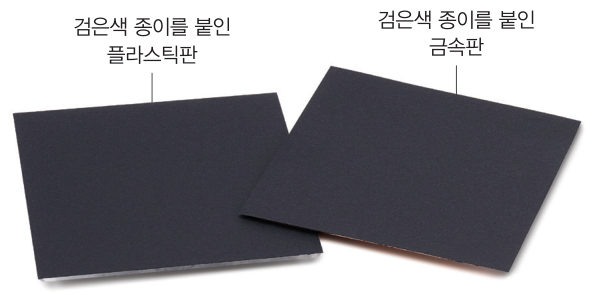

교과서에서는 열화상 카메라로 두 판의 색 변화를 보았다. 이번에는 금속판과 플라스틱판의 가장자리에 온도 센서를 붙이고, 뜨거운 금속 추의 열이 판을 따라 얼마나 빨리 전도되는지 숫자로 측정해 보자.
준비물 아두이노 UNO, USB 케이블, LM35 온도 센서, 써미스터(10 kΩ)와 10 kΩ 저항(또는 아날로그 온도 센서 모듈), 브레드보드, 점퍼선, 크기와 두께가 같은 금속판(알루미늄)과 플라스틱판, 금속 추 2개, 뜨거운 물(약 80 ℃)이 든 비커, 집게, 종이테이프, 자, 노트북(크롬), 보안경, 내열 장갑

| 처음 온도(℃) | 3분 뒤 온도(℃) | 온도 변화(℃) | |
|---|---|---|---|
| 🔴 금속판 가장자리 | - | ||
| 🔵 플라스틱판 가장자리 | - |
| 평가 항목 | 스스로 평가 |
|---|---|
| 센서를 같은 위치에 붙여 공정하게 비교했다. | |
| 측정 자료로 열이 전도되는 정도를 비교했다. | |
| 뜨거운 물과 추를 안전하게 다루었다. |